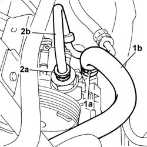
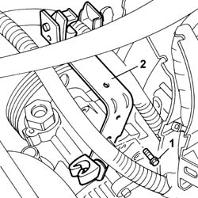
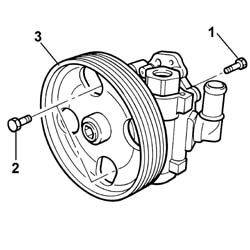
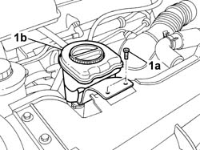
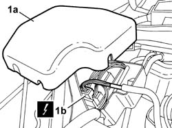
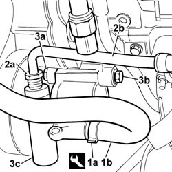
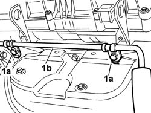
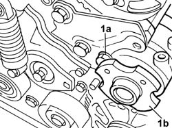
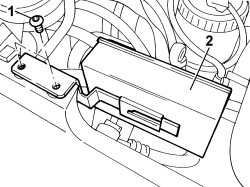
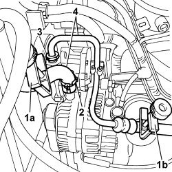

4130B20 POWER STEERING PUMP - R.R.
- Path
- Procedures > 41 STEERING UNIT > 4130 POWER STEERING > 4130B POWER STEERING HYDRAULIC SYTEM > 4130B20 POWER STEERING PUMP - R.R.
- Kind
- repair procedure (removal / refitting; the operation number is the code)
- Applies to
- all engines; all production periods
- Interactive page
- https://sloeber94.github.io/elrnDB-fUlss/en/#/179007360
Applies to: engines: 2.0 16v; all production periods
 Removing
Removing
 Refitting
RefittingSee
Op. 5530B56 BATTERY DRIP TRAY COVER - R.R.
Disconnect the negative battery terminal.
Position the vehicle on a lift.
See
Op. 4450B04 RIGHT FRONT WHEEL - R.R
See
Op. 7055B91 RIGHT FRONT WHEEL ARCH LINER - R.R.
See
Op. 4410D16 BRACKET (ONE) RETAINING CHASSIS TO BODY - R R
See
Applies to: engines: 2.0 16v; all production periods
See
Op. 0010T70 POWER ASSISTED STEERING FLUID - REPLACE
See
Op. 4130B10 POWER STEERING FLUID RESEVOIR - R.R.
See
Op. 4130B12 POWER STEERING FLUID RESERVOIR MOUNTING/BRACKETS - POSITION
See
Op. 5050A12 WINDSCREEN WASHER FLUID RESERVOIR FILLER PIPE (IN ENGINE COMPARTMENT) - R.R.
1. Remove collar (1a) and remove the pipe from reservoir to power steering pump (1b).
2. Undo connector (2a) and disconnect delivery pipe (1b) and place to one side.

Applies to: engines: 2.0 16v; all production periods
1. Undo the retaining bolt.
2. Remove the wiring and piping anchorage bracket.

Applies to: engines: 2.0 16v; all production periods
1. Undo the retaining bolt.
2. Working through the pulley holes, unscrew the bolts.
3. Remove the power assisted steering pump

Applies to: engines: 2.0 16v; all production periods
Refitting
RemovingPosition the power steering pump and tighten the fixing bolts to the recommended torque.
Value daNm | Fastening | Component | dia | |
|---|---|---|---|---|
. | 2.0 | Bolt | POWER STEERING PUMP |
Position the wiring and pipe holder bracket and tighten the fixing bolt.
Connect the delivery pipe to the power steering pump and tighten the connector to the specified torque.
Value daNm | Fastening | Component | dia | |
|---|---|---|---|---|
. | 2.0 | Connector | PIPE BTWN PUMP + POWER STEERING BOX |
Connect the pipe from reservoir to power steering pump and secure with a collar.
See
Op. 5050A12 WINDSCREEN WASHER FLUID RESERVOIR FILLER PIPE (IN ENGINE COMPARTMENT) - R.R.
See
Op. 4130B12 POWER STEERING FLUID RESERVOIR MOUNTING/BRACKETS - POSITION
See
Applies to: engines: 2.0 16v; all production periods
See
Op. 1092G10 SINGLE ENGINE BELT - R.R
See
Op. 4410D16 BRACKET (ONE) RETAINING CHASSIS TO BODY - R R
[Right front]
See
Op. 7055B91 RIGHT FRONT WHEEL ARCH LINER - R.R.
See
Op. 4450B04 RIGHT FRONT WHEEL - R.R
Remove the vehicle from the lift.
Connect the negative battery terminal.
See
Op. 5530B56 BATTERY DRIP TRAY COVER - R.R.
See
Op. 0010T70 POWER ASSISTED STEERING FLUID - REPLACE
1. Undo bolts (1a) and place engine oil filler fitting (1b) aside.

Applies to: engines: 2.0 16v; all production periods
1. Remove the cover from fuse box (1a), disconnect electrical connection (1b) and place the wiring aside.

Applies to: engines: 3.0 24V V6; all production periods
Removing
Refitting- Position the vehicle on the lift.
- Disconnect the negative battery terminal.
 | Description | Connector |
|---|---|---|
. | Battery |
1. Using the special tool, loosen the fastening band (1a) and disconnect the power assisted steering fluid return pipe (1b).
 | Description | Code | Function |
|---|---|---|---|
1a | Caliper | Band opening |
2. Undo the connector (2a) and detach the coolant supply pipe between the pump and the power assisted steering box.
3. Undo the upper fastenings (3a) and (3b) for the power assisted steering pump (3c).

Applies to: engines: 3.0 24V V6; all production periods
1. Undo the fixing bolts (1a) and move the supply pipe (1b) to free up the work area.

Applies to: engines: 3.0 24V V6; all production periods
- Loosen the fastenings for the power assisted steering pump pulley
1. Undo the lower fixing bolt (1a) and remove the power assisted steering pump (1b) from the engine.

Applies to: engines: 3.0 24V V6; all production periods
Refitting
Removing- Position the power assisted steering pump and tighten the lower bolt fixing it to the mounting to the recommended torque.
 | Value - daNm | Fastening | Component | Ø  |
|---|---|---|---|---|
. | 2.5 | Bolt | POWER STEERING PUMP |
See descriptions
- Tighten the upper fastenings securing the power assisted steering pump to the mounting to the recommended torque.
| Value - daNm | Fastening | Component | Ø  |
|---|---|---|---|---|
. | 2.5 | Bolt | POWER STEERING PUMP |
- Connect the power assisted steering fluid return pipe to the power assisted steering pump and renew the fastening band using the special tool.
| Description | Code | Function |
|---|---|---|---|
. | Caliper | Band opening |
- Connect the power assisted steering fluid supply pipe to the power assisted steering box and tighten the connector.
- Position the supply pipe and tighten the fixing bolts
- Connect the negative battery terminal.
| Description | Connector |
|---|---|---|
. | Battery |
- Remove the vehicle from the lift.
Applies to: engines: 2.0 16V JTD, 2.2 16V JTD; all production periods
Removing
Refitting
Applies to: engines: 2.0 16V JTD, 2.2 16V JTD; all production periods

Topics linked from this page (9)
- 0010T70 POWER ASSISTED STEERING FLUID - REPLACE
- 1092G10 SINGLE ENGINE BELT R R
- 4130B10 POWER STEERING FLUID RESEVOIR R R
- 4130B12 POWER STEERING FLUID RESERVOIR MOUNTING/BRACKETS - POSITION
- 4410D16 BRACKET (ONE) RETAINING CHASSIS TO BODY - R R
- 4450B04 RIGHT FRONT WHEEL R R
- 5050A12 WINDSCREEN WASHER FLUID RESERVOIR FILLER PIPE (IN ENGINE COMPARTMENT) - R.R.
- 5530B56 BATTERY DRIP TRAY COVER - R.R.
- 7055B91 RIGHT FRONT WHEEL ARCH LINER - R.R.